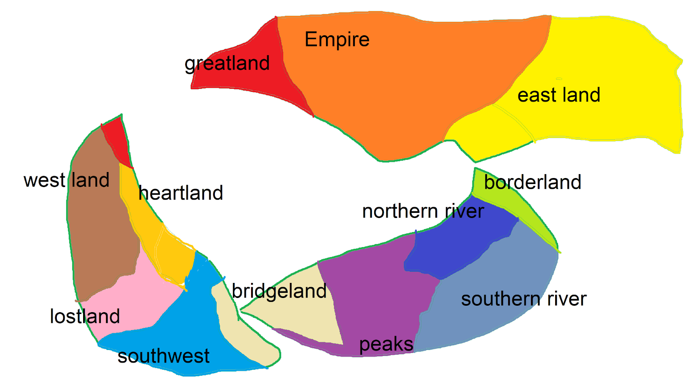

Each nation in the world of glowing blades has at least 1 major defining trait, that makes it easily identifiable.
This page is a brief guide to the world and its several nations.
The Empire is the northernmost nation in this world, and is consequently, the coldest.
Even by comparison to the next-coldest climate (Greatland), the Empire's tundras and mountains are harsh.
Its people value strength above all else, and its current Empress has a bloody history behind her.
West of the Empire is Greatland, a current rival of and former state of the Empire.
Greatlands people are very prideful, which resulted in a colonization of northern Westland,
allowing them to have some land that is actually well suited for farming.
East of the Empire is Eastland, with a relatively warmer climate, much more suited for farming.
They maintain relatively peaceful relations with the Empire and it's other neighbor, Borderland.
It too used to be a state of the Empire, however due to the mountain ridges,
it became increasingly difficult to govern, and so they were afforded their own independence.
Borderland is a small tropical area, isolated by seas and mountains from the rest of the world.
Its people migrated from Northriver and Southriver, and quickly became one of the most praised nations for its music and dance.
They only really trade with Eastland, due to it being a relatively small trip to get between the two.
Westland is known to the rest of the world, as the Capital of Magical Progress.
Its cities bustling with innovation and magic at every corner, its people value magic above all other skills.
Its capital houses the most prestigious Magic Schools and several high rated MaMAr Dojos.
In the southwest there lies a canyon surrounded by mountains, this canyon houses Lostland.
Due to a lack of much direct sunlight, really only getting any at noon, the nations main food supply is mushrooms.
Their culture had begun to revolve around mushrooms, seeing them as a symbol for the cycle of life and death.
North of Lostland, and east of Westland is the Heartland, a somewhat tropical nation.
Due to its location, combined with its climate, it became the worlds #1 trade center.
With people from all over the world visiting, both for just trade, tourism, or to move in, it's become the most diverse nation.
South of Heartland and East of Lostland is a large expanse of open flatlands, known as the Southwest Plains.
It's difficult to point out one prominant power within this nation, but all of the powers within it are in an alliance of sorts.
They do all trade with each other, giving what they have excess of and what the others need,
and they all are willing to fight for each other against outside nations.
A vast desert between the Grandpeaks and Southwest plains, with a canal between its two parts, the Bridgeland is relatively barren.
The nation relies heavily on imports and its few rivers for most of its sustainability, which also lead to its leading issue.
Bridgeland is littered with bandits, dunepirates, and the like, making the already treacherous journey around it even harder.
The Grandpeaks is a large mountain ridge that seperates Northriver and Southriver from Bridgeland, which is the #1 export country for minerals.
Mining is the nations main and almost only export, but due to being a hotspot for catalysts, the main method of magic,
it is profiable enough to surivve entirely off of trade.
One of the two nations, seperated by a great river which flows between Grandpeaks and Borderland.
Northriver is the more swampy of the two, being largely marshes, especially closer to the coast, and rely more on fishing.
Between the two river nations, they are also the one that believes humans ability to use magic were a gift from the gods.
One of the two river nations, seperated by a great river which flows between Borderland and Grandpeaks.
Southriver is the more well rounded of the two, having a decent amount of plains suitable for farming.
Between the two river nations, they are the one that believes humans earned the ability to use magic to challenge the gods.
